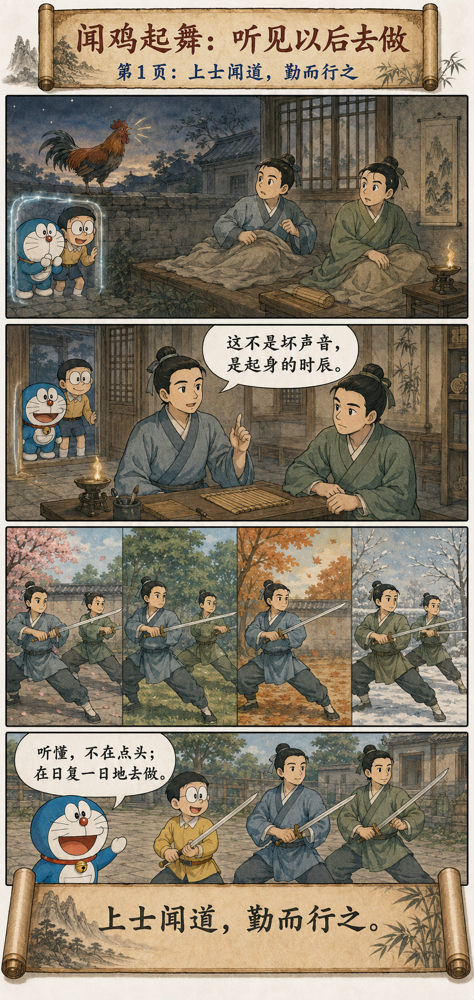
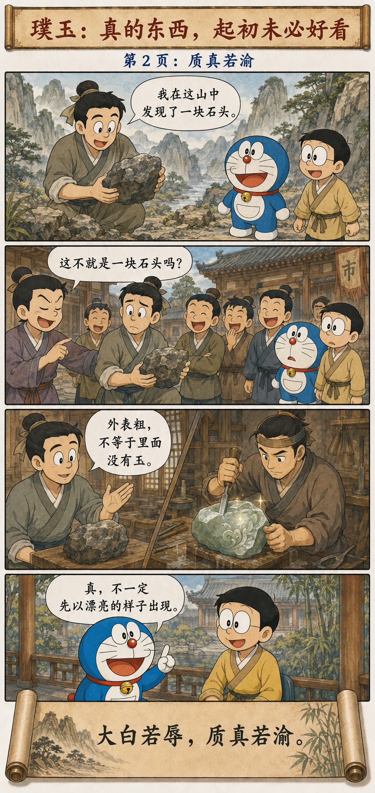

听见道以后，人会有三种反应
Three Responses to Hearing the Dao
上士闻道，勤而行之；
中士闻道，若存若亡；
下士闻道，大笑之。
不笑不足以为道。
故建言有之：
明道若昧，进道若退，夷道若颣；
上德若谷，大白若辱，广德若不足，
建德若偷，质真若渝；
大方无隅，大器晚成，
大音希声，大象无形。
道隐无名。
夫唯道，善贷且成。
The highest hear the Dao and practice it diligently. The middling hear it and half believe, half forget. The lowest hear it and laugh aloud; without that laughter, it would not be the Dao. Thus the old sayings tell us: the bright way seems dim; the advancing way seems to retreat; the level way seems rough. Highest virtue is like a valley; great purity seems stained; broad virtue seems insufficient; established virtue seems lax; genuine substance seems changeable. The greatest square has no corners; the greatest vessel matures slowly; the greatest sound is rarely heard; the greatest image has no form. The Dao is hidden and unnamed. Yet it is the Dao alone that gives and brings things to completion.
真理初来时，未必穿着“正确答案”的衣服
Truth Does Not Always Arrive Dressed as the Right Answer
有些道理一听便很顺耳，因为它只是重复我们已经相信的东西；另一些道理却会显得迟缓、笨拙、吃亏，甚至可笑，因为它动摇了我们习惯使用的尺度。
Some ideas sound immediately agreeable because they repeat what we already believe. Others appear slow, awkward, unprofitable, or even ridiculous because they disturb our familiar standards.
第四十一章并不要求人故意追求怪异。它提醒我们：不要把“第一眼看起来像什么”，误当成“它最终能成为什么”。真正的道路，常常要经过行动、时间和结果，才显出它的分量。
Chapter 41 does not ask us to seek oddity for its own sake. It warns us not to confuse first appearance with eventual possibility. A genuine path often reveals its weight only through action, time, and consequence.
去做、识真、等待成长
Practice, Recognize, and Allow Growth


闻鸡起舞：上士闻道，勤而行之
Zu Ti: To Hear Is to Begin Practicing
《晋书》记载，祖逖与刘琨同寝。半夜听见荒鸡鸣叫，祖逖没有把它当作令人厌烦的噪声，而说“此非恶声也”，随即叫醒刘琨起身练武。
The Book of Jin records that Zu Ti and Liu Kun slept in the same room. Hearing a rooster at midnight, Zu Ti did not dismiss it as an irritating noise. He said, “This is no ill sound,” woke Liu Kun, and began training.
一声鸡鸣当然不会自动造就一个人。真正改变命运的，是他把一次触动变成了可以重复的行动。上士与中士的差别，往往不在听到了多少新道理，而在第二天是否真的改变了日程。
A rooster’s cry does not automatically make a person. What changes a life is turning one moment of insight into repeatable action. The difference between the highest and the middling is often not how many new ideas they hear, but whether tomorrow’s schedule actually changes.
璞玉被当作石头：质真若渝
Bian He: Genuine Jade May First Look Like Stone
《韩非子·和氏》写卞和献璞。未经琢磨的玉从外面看只是一块石头，识玉者判断错误，珍贵之物也就被当成普通之物。后来玉人理其璞，才显出宝玉。
In Han Feizi’s “The Story of He,” Bian He presents an uncut stone. Before polishing, jade looks like ordinary rock; when the examiner judges poorly, something precious is treated as common. Only later does a craftsman open the stone and reveal the jade.
这个故事并不是说所有不起眼的石头里面都有玉，而是提醒我们：真实与漂亮不是同一个标准。新想法、陌生的人、尚未成熟的能力，都可能暂时缺少一种让人迅速识别的外观。
The story does not claim that every unremarkable stone contains jade. It tells us that truth and polish are different standards. A new idea, an unfamiliar person, or an immature ability may temporarily lack the appearance by which people recognize value quickly.
吴下阿蒙：大器的形成没有现场解说
Lü Meng: Great Capacity Grows Without Live Commentary
孙权劝吕蒙读书，吕蒙起初以军务繁忙推辞，后来开始认真学习。鲁肃再与他交谈时，发现他的见识已经不同，感叹他“非复吴下阿蒙”；吕蒙回答：“士别三日，即更刮目相待。”
Sun Quan urged Lü Meng to study. Lü initially pleaded military duties, but later applied himself seriously. When Lu Su met him again, he was astonished by the change and said that Lü was no longer the old “Ah Meng of Wu.” Lü replied that after three days apart, a scholar should be seen with new eyes.
别人看到的是重逢时的惊讶，吕蒙经历的却是一个个没有掌声的夜晚。“晚成”不是被动地等，而是允许重要能力按自己的速度积累，不因为暂时无人看见就停止。
Others saw the surprise of reunion; Lü Meng lived through night after night without applause. Maturing slowly is not passive waiting. It is allowing important ability to accumulate at its own pace without stopping merely because no one sees it yet.
“若”字后面，是表象与实质之间的距离
The Word “Seems” Marks the Distance Between Appearance and Reality
被嘲笑，不会自动证明你是对的
Being Mocked Does Not Automatically Make You Right
“下士闻道，大笑之”不是一张免于检验的通行证。错误、草率和自欺也会被人嘲笑。区分它们，仍然需要证据、实践、修正和时间。
“The lowest laugh aloud” is not a pass exempting an idea from examination. Error, carelessness, and self-deception are mocked too. Evidence, practice, correction, and time are still required to tell them apart.
老子真正松动的是“大家都理解，所以一定正确；大家都笑，所以一定错误”这种懒惰判断。别把掌声当证明，也别把反对当勋章；让行动与结果慢慢说话。
Laozi loosens the lazy rule that universal approval proves truth and laughter proves error. Do not use applause as evidence or opposition as a medal. Let practice and consequence speak over time.
先别急着显得厉害，先让事情真正长出来
Do Not Rush to Look Impressive; Let the Work Become Real
第四十一章把注意力从“看起来如何”移向“能否成事”。闻道以后去做，面对粗糙时保留判断，在无人喝彩时继续积累。很多重要的东西，起初都没有一个足以炫耀的样子。
Chapter 41 moves attention from appearance to accomplishment: practice what you hear, preserve judgment before rough surfaces, and continue accumulating without applause. Many important things begin without an impressive form.
不要用第一眼，替时间下最后的结论。
Do not let the first glance write time’s final conclusion.
原典与故事出处
Primary Texts and Story Sources
《道德经》王弼本 · 《晋书·祖逖传》 · 《韩非子·和氏》 · 《三国志·吴书九》
The Wang Bi edition of the Daodejing, the Book of Jin, Han Feizi’s “The Story of He,” and the Records of the Three Kingdoms.